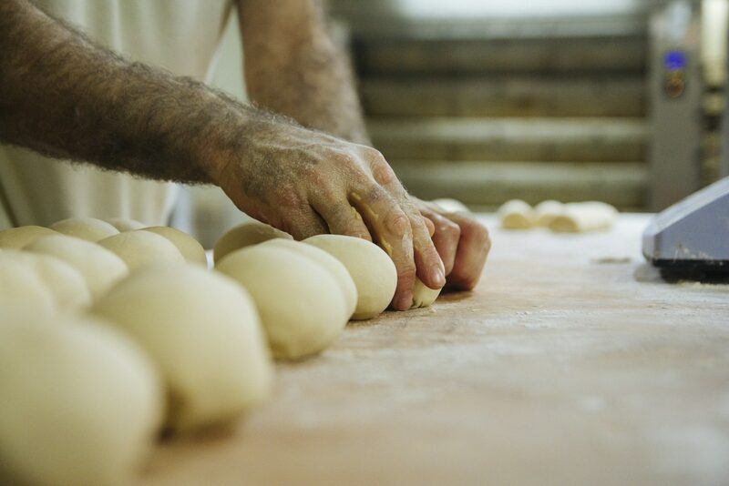
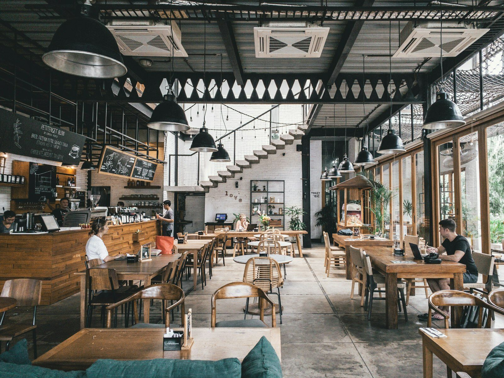
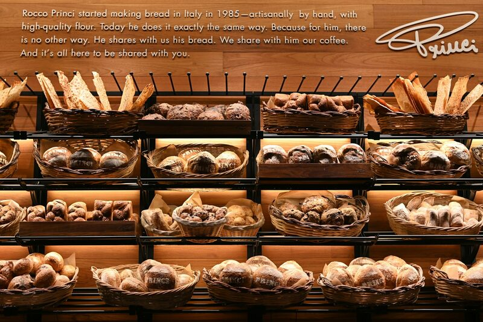
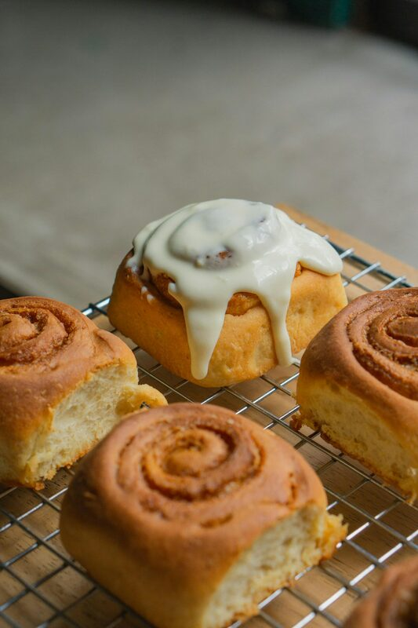

By hand
Every loaf is shaped individually. No dividers, no moulds.
Our story
We started in a garage with a secondhand oven. One loaf became two dozen. Two dozen became our current shop. That was five years ago. Now we bake two hundred loaves daily.
Our oven runs twenty hours a day. Starters are fed by hand. Dough rises slowly, overnight, sometimes longer. We laminate croissants by hand. There's no shortcut to good bread.
We use flour from two mills. Both organic. We source butter from a local dairy. The ingredients list for our sourdough: flour, salt, water, time. That's everything.

Sit down, or take it with you. Both are fine.
By the numbers
24 hrs
Oven daily
18 hrs
Fermentation
500+
Loaves weekly

Every loaf is shaped individually. No dividers, no moulds.

Organic flour from two local mills, milled the week we use it.

What doesn't sell goes to a shelter at the end of the day.